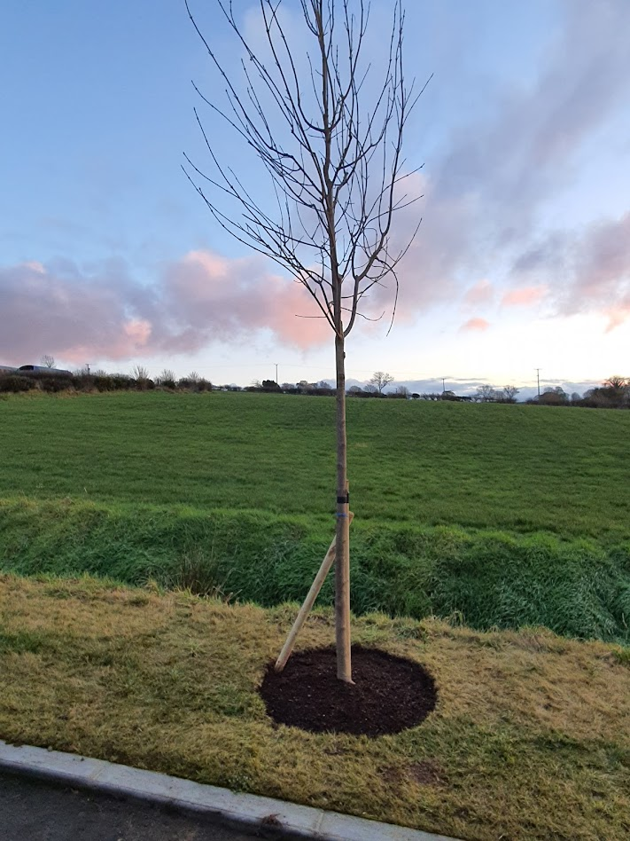
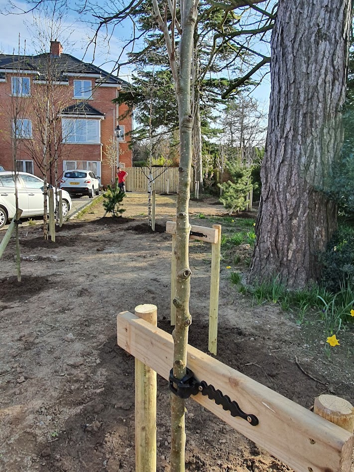
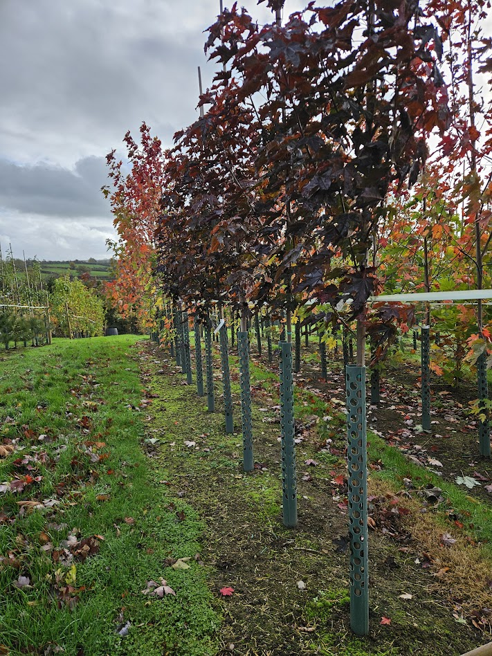

Care Guide
Simple, practical tips to help your Papervale tree get off to the very best start, from the moment it arrives to its first years of growth.
Your tree has been sealed in packaging for the past couple of days. When it arrives, place it in a light and airy spot (out of direct sunlight) and set the pot on a saucer of water for up to two days. This helps the tree rehydrate and acclimatise to its new surroundings.
Make a square hole with straight sides, about twice the width of the pot. A square hole helps roots grow outward instead of spiralling around in a circle.
Break up the soil at the bottom of the hole to encourage root penetration down into the ground beneath.
Keep the top of the rootball level with or slightly above the surrounding ground. Planting too deep is one of the most common causes of poor establishment.
Refill the hole with topsoil, gently firming it in to remove air pockets and give the rootball good stability.
Keep a 1 meter circle around the tree base free from grass and weeds. Apply 5cm of mulch each spring, but keep mulch away from touching the tree stem to prevent rot.
Your tree will benefit from some support while it establishes a strong root system, especially if planted in an exposed or windy site.
You can keep the original bamboo cane or replace it with a larger stake for added support in the first year. Position the stake on the windward side of the tree, driven firmly into the ground outside the rootball. For most small trees, one stake at two-thirds of the tree's height is ideal.

Use a flexible tree tie to attach the trunk to the stake, firm enough to keep the tree upright but loose enough to allow gentle movement. Movement encourages the tree to develop a strong trunk. Check the tie regularly, especially after strong winds, and loosen or adjust it as the tree grows to prevent rubbing or constriction.

If your tree is planted in an area with rabbits, deer, or strimmers, fit a tree guard or spiral protector around the lower trunk. This will help prevent bark damage and protect the young tree while establishing. Ensure guards are well-ventilated and don't trap moisture, as dampness can encourage disease.

Keep the support system in place for the first one to two years, then remove the stake and ties once the tree is strong enough to stand on its own.
Proper watering and feeding are key to helping your tree settle in and thrive for years to come. Young trees in particular need consistent moisture and nutrients while they establish their root systems.
Water your tree thoroughly after planting to settle the soil around the roots. This helps remove air pockets and ensures good root-to-soil contact.
Trees need regular watering, especially during dry spells or warm, windy weather. Give a deep soak once or twice a week rather than frequent light sprinklings, as this encourages deep root growth. Aim for around 10–20 litres per watering depending on tree size and soil type. Sandy soils may need more frequent watering; heavier clay soils retain moisture for longer.
Before watering, check the soil a few inches below the surface: it should feel slightly damp but not waterlogged. Overwatering can be just as harmful as underwatering, especially in poorly drained areas.
Mulching tip: Maintaining a 5cm layer of mulch around the base of the tree (but not touching the stem) helps retain moisture, suppress weeds, and keep roots cool in summer and insulated in winter.
First Year Advice
Avoid strong fertilisers right after planting.
Let the tree settle and focus on root establishment first. Rushing feeding in the first season can damage fine roots that are still recovering from transplanting.
Apply a slow or controlled release fertiliser in early spring to support strong, healthy growth throughout the season.
A balanced fertiliser with equal parts nitrogen, phosphorus and potassium (NPK such as 10-10-10) works well for most trees.
If you prefer a natural approach, well-rotted compost or manure, lightly worked into the soil around the base, provides a gentle, steady nutrient boost without risk of over-feeding.
Each spring, renew your mulch layer and top up the fertiliser to maintain soil health and encourage robust root and canopy development.
With the right care in these early years, your tree will establish quickly and reward you with healthy, vigorous growth for decades to come. A little attention in the early months goes a long way.